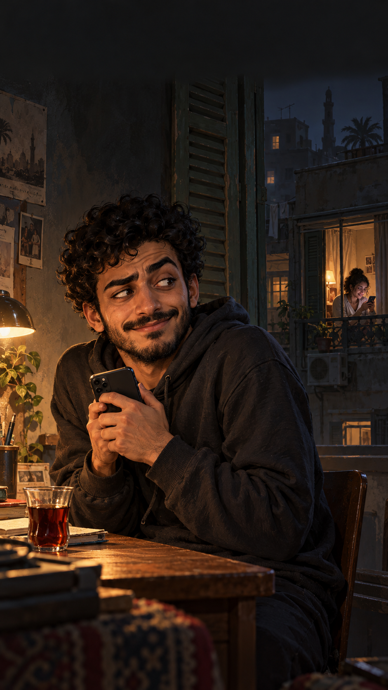
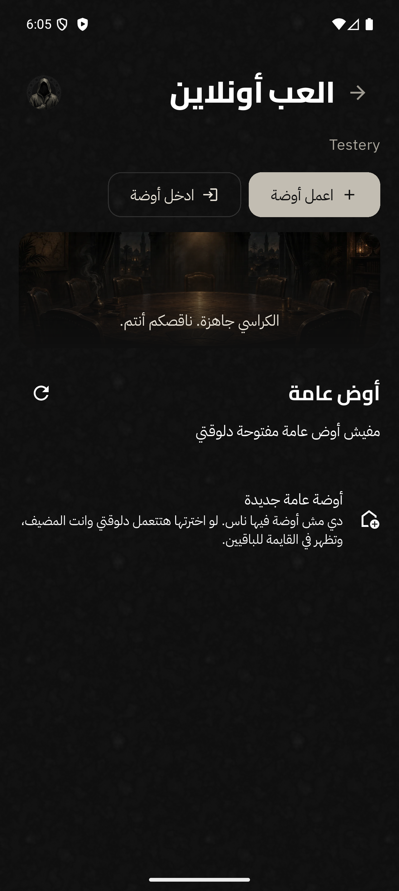
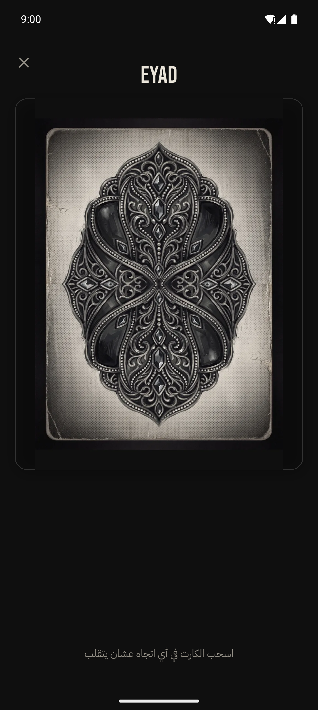
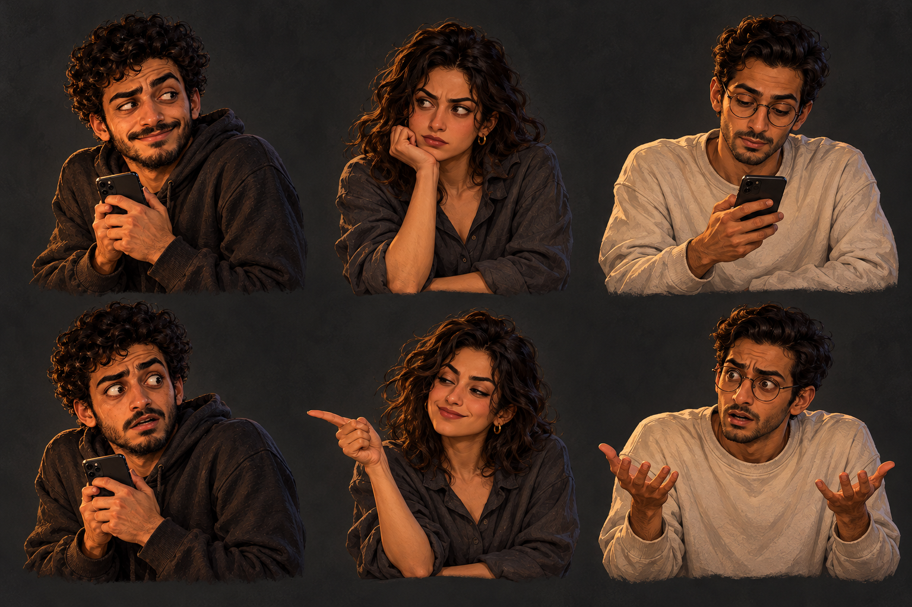

تمثيل الشخصيات
صور مرجعية معتمدة ومقاطع أداء قصيرة. نفحص ثبات الوش والهدوم والأيدي، ونرفض أي لقطة شكلها بيتغيّر.
ريل أول إطلاق / شخصيات · تطبيق · رحلة
تلات أفلام ممكنة. صور جديدة، وشاشة اللعبة الحقيقية، وحركة بتكمّل اللي قبلها. اختار اتجاه وشغّل اختبار الكاميرا.






 هتبدأ بمين؟
هتبدأ بمين؟
اختبار بصري صامت / ١٨ ثانية مكثّفة من الاتجاه. حركة كاميرا وموبايل وورق؛ الشخصيات هنا صور تطوير ثابتة، وتمثيلها ومزامنة آدم لسه في مرحلة الإنتاج.
01 / الموصى به
«تعرف لعبة المافيا؟»
«شايف اللي بيقول أنا بريء؟»
صاحبك بيخبي شاشة موبايله، بس ابتسامته مش مطمّنة. نتابع جولته ونشوف في الآخر كان بيضحك على مين.
لقطة قريبة، عين جانبية، ابتسامة واثقة زيادة. آدم يسأل: تعرف لعبة المافيا؟
الصوت الجديدآدم المصريصاحبك بيوريك لعبة؛ خفيف، واضح، وبيستمتع بالكشف. تسجيله الجديد لسه بعد اختيار الاتجاه.
أداء، مش صورة بتتهز
كريم يحاول يبان بريء. سلمى تلاحظ التناقض. عمر يتّهموه غلط. نثبت شكلهم أولًا، وبعدها نعمل مقاطع تمثيل: نظرة، اعتراض، إصبع، ولقطة انكشاف.
شخصيات الإعلان، مش بدائل لشخصيات اللعبة. الكروت الأصلية تفضل زي ما هي.

المنتج قدّامنا
دي لقطات موجودة فعلًا في ملفات المشروع. نستخدمها مرجعًا وتصويرًا، ونكمّل لقطات الليل والتصويت والقصص من التطبيق وقت الإنتاج.
الاتجاه الأول / مسودة الأداء
الهدف ٥٦–٥٩ ثانية. التوقيت يتقفل بعد تسجيل آدم، مش من عدد الكلمات وحده.
طريقة التنفيذ
صور مرجعية معتمدة ومقاطع أداء قصيرة. نفحص ثبات الوش والهدوم والأيدي، ونرفض أي لقطة شكلها بيتغيّر.
ضغط إصبع، سحب كارت، باب يتفتح. الحركة تكمل الشيء اللي قبلها. هدوء صغير قبل الانكشاف يخلي النكتة تقرأ.
الكارت يفتح ملفًا. لمبة كهرماني، ورق مانيلا، صور ودليل. هوية القصص كاملة تظهر في المكان، مش لون خلفية بس.